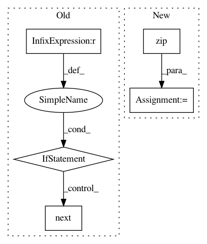

325fae8fbbc16b3c1ca40559bb2a9c783efaf440,libact/query_strategies/active_learning_by_learning.py,ActiveLearningByLearning,make_query,#ActiveLearningByLearning#,161
Before Change
def make_query(self):
Except for the initial query, it returns the id of the data albl
wants to query.
if self.queried_hist_ == []:
// initial query
q = self.exp4p_.next(-1, None, None)
ask_idx = np.random.choice(
np.arange(len(self.unlabeled_invert_id_idx)), size=1, p=q
)[0]
ask_id = self.unlabeled_entry_ids[ask_idx]
self.W.append(1./q[ask_idx])
self.queried_hist_.append(ask_id)
return self.queried_hist_[-1]
class Exp4P():
After Change
wants to query.
dataset = self.dataset
try:
unlabeled_entry_ids, X_pool = zip(*dataset.get_unlabeled_entries())
except ValueError:
// might be no more unlabeled data left
return
In pattern: SUPERPATTERN
Frequency: 3
Non-data size: 5
Instances
Project Name: ntucllab/libact
Commit Name: 325fae8fbbc16b3c1ca40559bb2a9c783efaf440
Time: 2015-11-25
Author: yangarbiter@gmail.com
File Name: libact/query_strategies/active_learning_by_learning.py
Class Name: ActiveLearningByLearning
Method Name: make_query
Project Name: senarvi/theanolm
Commit Name: 0816c636b7d7832a0177a08a08888840d717bed4
Time: 2017-01-24
Author: seppo.git@marjaniemi.com
File Name: theanolm/scoring/textscorer.py
Class Name: TextScorer
Method Name: score_batch
Project Name: Qiskit/qiskit-aqua
Commit Name: 2623e2cc3a76b7e7c7c4ea95f93077c6270cd05c
Time: 2019-02-15
Author: shaohan.hu@ibm.com
File Name: test/test_simon.py
Class Name: TestSimon
Method Name: test_simon